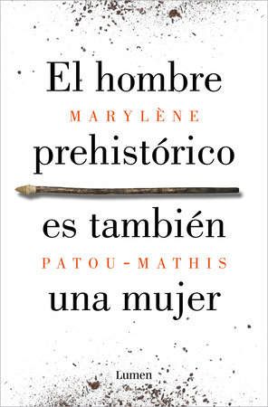

El hombre prehistórico es también una mujer: Una historia de la invisibilidad de las mujeres
Reseña por Jorge I. Zuluaga

Ver reseña en GoodReads (necesita cuenta)
Aunque no sé qué me produjo más impresión: si la increíble versión "alternativa" de la historia que nos presenta su autora, Marlène Patou-Mathis, reconocida prehistoriadora francesa, versión en la que las mujeres prehistóricas e históricas son, además de madres y cuidadoras, jefas, artistas, cazadoras, líderes, guerreras, símbolos, diosas, etc., hasta que las primeras sociedades (al menos en Eurasia, de donde nos viene nuestro legado patriarcal) se "corrompen" con el pernicioso germen de la esclavitud y la invisibilización injustificada de la mujer; o tal vez la sorpresa fue más grande por el hecho de saber tan poco al respecto.
No soy un científico social, un arqueólogo, un antropólogo, tampoco un feminista estudioso (por definición tampoco podría serlo, ver más abajo), pero me considero una persona relativamente informada e insisto: me sorprendió lo poco que sabía sobre este tema (más allá de algunas referencias que había visto en los primeros capítulos del libro Ideas, de Peter Watson).
El libro está profusamente documentado. El 40% de su contenido son notas y referencias (¡léanlas!). Debo confesar que a veces es difícil leer el libro siguiendo cada nota; yo me propuse hacerlo con disciplina para no perder ni un solo detalle. El resultado, al menos para mí, fue como el de leer dos o más libros diferentes. ¡Muy ilustrativo! Aprendí conceptos que no se definen en el texto y conocí autores y autoras que ahora quiero leer.
Si bien el libro nos presenta, como promete su título (que fue la principal razón por la que lo conseguí; me encanta la historia de la humanidad antes de la historia, la paleoantropología que llaman) y como comenté antes, una versión alternativa del papel de las mujeres en el paleolítico (el período comprendido entre 800.000 y 10.000 años atrás, antes de la domesticación de plantas, el surgimiento de la agricultura y las primeras "ciudades"), no se restringe en lo absoluto a eso. Yo caí atraído por la paleoantropología, pero terminé ilustrado en muchas otras cosas.
La estructura del libro se podría presentar así (las preguntas son mías): ¿cómo creemos que eran las mujeres prehistóricas? (capítulo 1); ¿por qué creemos que era así? (capítulo 2, un poco difícil de leer por la cantidad de sandeces vergonzosas que creían los intelectuales, en su mayoría hombres, del siglo XIX y que algunos ignorantes seguro siguen sosteniendo); ¿cómo pudieron ser realmente las mujeres prehistóricas cuando se tiene en cuenta la evidencia arqueológica y paleontológica sin sesgos machistas? (capítulo 3); y ¿cuál ha sido la historia del lugar de la mujer en la sociedad desde el neolítico hasta el siglo XXI? (capítulo 4).
Insisto: ¡tremendo tratado!
Me encantó ver confirmado por una experta una intuición que tenía sobre la manera sesgada, y a mi parecer medio estúpida, de referirnos a la humanidad como "los hombres" o a nuestra especie como "el hombre". Ahora entiendo (aunque puede ser obvio para todos) que esta es una invención de los estudios de la prehistoria que comenzaron en el machismo exacerbado de la sociedad victoriana del siglo XIX. Quien quiera que lea esta reseña hasta esta parte, por favor, no use más el genérico "hombres" y "hombre" (por ejemplo, "el hombre llegó a la Luna", "el origen del hombre", etc.) para referirse a la humanidad.
Fue duro descubrir (o confirmar) la misoginia de hombres muy admirados: Aristóteles, Platón, Montesquieu, Montaigne, el mismísimo Darwin.
Más duro todavía fue descubrir cómo se ha usado la misma ciencia, en especial la medicina, o ciertas ideologías de origen científico, para mantener patrones de pensamiento y, finalmente, de opresión y esclavitud sobre las mujeres, a todas luces contrarios al espíritu de la ciencia. Así, por ejemplo, siempre se nos han presentado las diferencias físicas entre hombres y mujeres como hechos demostrados por la ciencia: las mujeres son más pequeñas y menos fuertes, tienen un cerebro más pequeño, están "afectadas" emocionalmente por su ciclo hormonal mensual, sufren dolencias psicológicas extremas muy diferentes de las de los hombres (por ejemplo, la histeria), etc.
¡Bullshit!
La evidencia arqueológica ha mostrado que las mujeres promedio del neolítico tenían un físico comparable al de las mujeres deportistas actuales. Se ha descubierto que esqueletos identificados originalmente como masculinos (por su tamaño y complexión) eran realmente de mujeres (análisis genético). La talla y la fuerza de las mujeres dependen de su alimentación (que la mayor parte de la historia fue más pobre para las mujeres por el círculo vicioso de debilidad) y de las condiciones en las que vivan; un guerrero vikingo, enterrado entre armas y admirado por siglos, resultó ser una guerrera. La "histeria" es común a hombres y mujeres. No hay nada en el ciclo hormonal femenino que afecte su capacidad para juzgar o actuar distinto a la de cualquier hombre. Y un largo etcétera.
Unas reflexiones finales.
He aprendido que no todos podemos ser feministas (especialmente si somos hombres nacidos en el patriarcado, eso es imposible). Pero sí podemos, independientemente de nuestro sexo o nuestro género, educarnos e ilustrarnos en la historiografía de la historia de las mujeres.
Hacerlo nos permitirá reconocer las injusticias históricas absurdas cometidas en nombre de libros sagrados, modelos económicos y sociales caducos, incluso de la ciencia misma, contra el 50% de la humanidad (las mujeres) por más de 2000 años (una cifra mayor o menor dependiendo de la cultura).
Es necesario que identifiquemos los sesgos con los que seguimos pensando en la mujer y el hombre (inconsciente o muy conscientemente) y tratemos de evitarlos para que las nuevas generaciones vivan en una sociedad mejor para el 100% de los humanos. Pero lo más importante: debemos hacerlo para participar en la construcción conjunta de un mundo no patriarcal, como recomienda al final la autora.
Para todo eso hay que leer libros como este. ¡Qué buen libro!